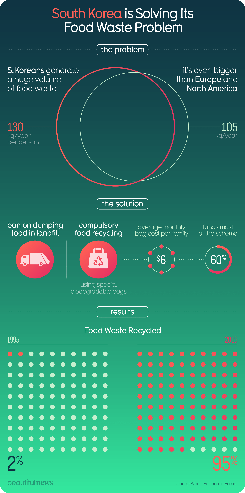

Visualization

Source: weforum.org
Critique
Information Resolution
What I appreciate about this infographic right away is how quickly it tells a full story. In one glance, it moves the viewer through a clear sequence of the problem, the solution, and the resultsand that structure makes the message feel easy to absorb even if you only spend a few seconds on it. In that sense, the visualization has strong “information resolution” at the headline level: the hierarchy is clear, the numbers are bold, and the final takeaway is memorable, especially the jump from 2% recycled in 1995 to 95% recycled in 2019.
However, Tufte’s idea of “information resolution” isn’t only about whether a graphic is easy to read, it’s also about how complete and specific the information is once you look closer. And when I slow down and try to evaluate what the infographic is actually proving, I start to notice places where the information feels a little “low-resolution,” meaning the graphic gives a confident conclusion without giving enough supporting detail for the viewer to fully judge it. For example, the title - “South Korea is Solving Its Food Waste Problem” - sets a strong tone. “Solving” implies closure: that the problem is shrinking or nearly finished. But the data shown focuses on recycling rates, not necessarily on whether less food waste is being produced overall. Recycling more is definitely meaningful, but it’s not the same as reducing waste at the source. The infographic also includes a comparison: 130 kg/year per person versus 105 kg/year, framed as “even bigger than Europe and North America.” But it doesn’t explain what the 105 represents (a combined average? separate averages? which countries? what year?). That missing context matters because the comparison is one of the main ways the graphic builds urgency. The short description provided by the website adds useful context: uneaten banchan in Korean dining culture contributes to waste, and the government responded with landfill bans and compulsory recycling, producing biogas, bio-oil, and fertilizer for urban farms. I actually think this description makes the story stronger but it also highlights what the infographic leaves out. If the visualization is going to imply a full “solution,” I want at least a little more detail about scope, definitions, and tradeoffs. For instance: What counts as “food waste” here? Household only, or also restaurants and commercial sources? How is “recycled” defined? And how large are the environmental benefits, how much biogas or fertilizer is actually produced? The infographic communicates a powerful narrative, but it doesn’t give the viewer enough detail to fully evaluate how broad or measurable the success is.Effects without causes
Another limitation is that the infographic shows outcomes much more clearly than it explains how those outcomes were achieved. It lists policies - landfill bans, compulsory recycling, biodegradable bags - but these appear as icons and short phrases rather than a clear mechanism. That simplicity makes it accessible, but it also makes the change feel almost automatic: policy was introduced, and then recycling climbed to 95%. In reality, major shifts like this usually involve enforcement, infrastructure, public compliance, and long-term investment. Without showing any of that, the visualization emphasizes effects while leaving the deeper causes somewhat vague.
Cherry-picking
The results section is visually persuasive because it uses two endpoints (1995 and 2019), which creates a dramatic before-and-after effect. But using only endpoints can hide what happened in between. Was progress steady? Were there setbacks? Did certain policies matter more than others? Even a small timeline or additional data points could increase credibility while keeping the design clean. Similarly, the regional comparison (“Europe and North America”) feels rhetorically strong, but without clarity on how that number is calculated, it can come across as more persuasive than precise.
Conclusion
YOverall, I think this infographic is effective as a public-facing communication piece: it’s visually cohesive, easy to follow, and emotionally convincing. It makes the viewer feel like there is a clear problem and a clear path to improvement. At the same time, from a Tufte “information resolution” perspective, it is stronger in narrative clarity than in evidence depth. To improve the graphic’s informational integrity without losing its accessibility, it could (1) define key metrics more clearly (what the 105 kg/year represents and how “food waste” is measured), (2) separate “recycling rate” from “total waste generated,” and (3) show a small trend over time rather than only endpoints. Those adjustments would make the conclusion feel more grounded - still inspiring, but also more verifiable.